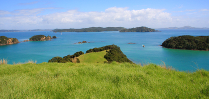
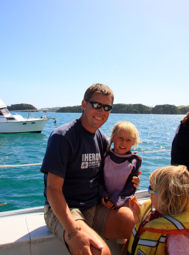

Bay of Island

På min lysegrønne ø
tirsdag den 11. marts 2008

Endnu en dag står vi op til dejligt vejr og udsigt over Russel bugt fra vores campingplads. Da det snart er jævndøgn falder der meget dug om natten nu, og vi skal huske at tage vores ting ind i bilen om aftenen ellers er det drivvådt om morgenen.
I dag skal på sejtur med katamaranen Carino fra kl. 9.45 til kl.16.00 det er spændende om pigerne kan sidde stille så længe.
Vi når ikke at sejle så langt inden vi støder ind i 3 delfiner, to voksne og en kalv. De springer flere meter op i luften foran båden, vi får også set hvordan de jager fisk, det har vi ikke oplevet før. På et tidspunkt hopper de op i hovedet på en lille pingvin, der forskrækket dykker ned i vandet. Forældrene siger : “ Ih” og “Åhhhh og tager ca. 200 billeder”, pigerne siger : “ Nu har vi set nok delfiner, vi vil hellere lege”. Og sådan kommer vi ned på jorden igen, og ind i det lille legeunivers, de kan skabe overalt på kloden.
Vi lægger til ud for en meget lysegrøn ø, hvor fårene går og hygger sig. Her bliver vi sejlet ind i gummibåd, for at få en badetur og en gåtur med indlagt udsigt over Bay of Island. Det er et spændende landskab, megen frodighed tæt på det rå hav.

Tilbage på båden er der grillede hotdogs, en stor succes. Bagefter sættes der sejl af det kvindelige personale, og vi lægger os ud foran for at hygge de sidste timer. Pigerne er vilde med trampolinen, men det går altså ikke an at hoppe for vildt. Katamaranen går ikke så stærkt trods danske North Sails sejl, så vi må se os overhalet af en 70 fods båd med spieleren sat.
På kajen er der is, og indkøb. Aftenen går med rekordforsøg i løb rundt om camperen, Happy Feet tegnefilm og telefonsladder med mor.
I morgen kører vi over på østkysten og ser kæmpe Kauri træer, hvis vi kan tage os sammen til at forlade dette dejlige sted.
Jeg arbejder på en samlet oversigt over vores bedste oplevelser og de bedste campingpladser, så den kommer snart op, hvis nogen skulle have fået lyst til at drage afsted.
/Camilla
Udsigt over Bay of Island, ser det ikke skønt ud ?